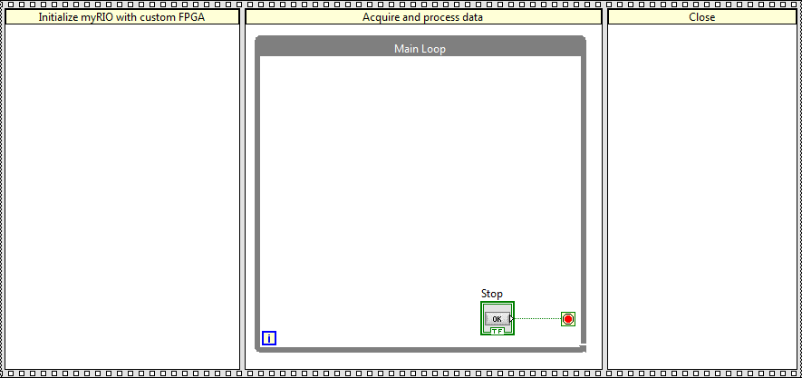

You can use the myRIO Custom FPGA Project template as a starting point for creating myRIO applications with your custom FPGA code. With the myRIO Custom FPGA Project template, you can easily modify the code of the myRIO shipping FPGA personality.
This template is suitable for applications that have the following characteristics:
The following example applications can benefit from the use of this template:
Understanding the Components of This Template
Use the LabVIEW FPGA Module to create custom FPGA code. Use the myRIO VIs and the LabVIEW Real-Time Module to create real-time (RT) code. The FPGA code and the RT code run in parallel.
This template consists of the following VIs:
The RT Main VI in this template uses a Flat Sequence structure that executes frames from left to right:
The Flat Sequence structure in this template executes the following frames from left to right:
The following table summarizes the design decisions you must make when modifying this template.
| Design Decision | Design Example | Detailed Information |
|---|---|---|
| How do you want to control the order of execution in your application? | You want data to flow as desired without using the Flat Sequence structure. | Controlling the Order of Execution |
| What data does your application need to initialize? | You want your application to open and set the custom FPGA bitfile. | Adding Initialization Code |
| Which myRIO I/O channels does your application need to access? | You want your application to control the DIO channels on the myRIO. | Modifying the Data Acquisition and Processing Code |
| What executions does your application need to complete before exiting? | You want your application to close the custom FPGA reference and reset the FPGA target. | Adding Closing Code |
| How does your application handle errors? | You want your application to report errors at the end of the execution flow. | Modifying Error Handling |
This template uses the Flat Sequence structure to control data flow. The data leaves each frame as the frame finishes executing. This template uses the Flat Sequence structure to demonstrate the purpose of the code in each frame.
Note Do not overuse the Flat Sequence structure for controlling the execution order because the Flat Sequence structure prohibits parallel operations.
When you modify this template, you can remove the Flat Sequence structure and establish data dependency between nodes. For example, wiring the error in and error out clusters through nodes controls the data to flow from one node to another.
This template initializes the FPGA bitfile that the FPGA Main Default VI/FPGA Main High Throughput VI generates. If you want to use your custom FPGA personality, you must open and set the custom FPGA bitfile. Otherwise, the myRIO uses the shipping FPGA personality. You also can initialize the data to specific values or to open a file for logging.
This template uses the Button Express VI to acquire user button data from the myRIO and displays the button value on a Boolean indicator.
You can add code to acquire data from the myRIO and process the data based on your application needs. Use the myRIO VIs to access myRIO I/O channels and the onboard devices. Add time-critical functions to your FPGA code and use the FPGA host interface to access the custom elements that you add to the FPGA code. Adding time-critical functions to your FPGA code allows the FPGA functions and RT functions to run in parallel at a fast rate.
This template uses the Close FPGA VI Reference function to close the reference to the FPGA Main Default VI/FPGA Main High Throughput VI. You must close the FPGA reference to reset the FPGA target at the end of the application.
You can add code that executes after the data acquisition and processing completes but before the application exits. Closing code commonly accomplishes the following tasks:
By default, if an error occurs in the Button Express VI, this template stops. If you do not want the error to stop your application, you can remove the OR function and wire the Stop control directly to the conditional terminal of the While Loop. The error in and error out clusters pass error information from the beginning of the VI to the end and report the error at the end of the execution flow.
Refer to the LabVIEW Help, available by selecting Help»LabVIEW Help from LabVIEW, for information about LabVIEW concepts or objects used in this sample project. You also can use the Context Help window to learn basic information about LabVIEW objects as you move the cursor over each object. To display the Context Help window in LabVIEW, select Help»Show Context Help.
If you use the myRIO high-throughput FPGA personality, refer to the Voice Recorder sample project, available from the Create Project dialog box, for an example of adapting this template to an audio sampling application.
Copyright
© 2013–2015 National Instruments. All rights reserved.
Under the copyright laws, this publication may not be reproduced or transmitted in any form, electronic or mechanical, including photocopying, recording, storing in an information retrieval system, or translating, in whole or in part, without the prior written consent of National Instruments Corporation.
National Instruments respects the intellectual property of others, and we ask our users to do the same. NI software is protected by copyright and other intellectual property laws. Where NI software may be used to reproduce software or other materials belonging to others, you may use NI software only to reproduce materials that you may reproduce in accordance with the terms of any applicable license or other legal restriction.
End-User License Agreements and Third-Party Legal Notices
You can find end-user license agreements (EULAs) and third-party legal notices in the following locations after installation:
U.S. Government Restricted Rights
If you are an agency, department, or other entity of the United States Government ("Government"), the use, duplication, reproduction, release, modification, disclosure or transfer of the technical data included in this manual is governed by the Restricted Rights provisions under Federal Acquisition Regulation 52.227-14 for civilian agencies and Defense Federal Acquisition Regulation Supplement Section 252.227-7014 and 252.227-7015 for military agencies.
IVI Foundation Copyright Notice
Content from the IVI specifications reproduced with permission from the IVI Foundation.
The IVI Foundation and its member companies make no warranty of any kind with regard to this material, including, but not limited to, the implied warranties of merchantability and fitness for a particular purpose. The IVI Foundation and its member companies shall not be liable for errors contained herein or for incidental or consequential damages in connection with the furnishing, performance, or use of this material.
Trademarks
Refer to the NI Trademarks and Logo Guidelines at ni.com/trademarks for information on National Instruments trademarks. Other product and company names mentioned herein are trademarks or trade names of their respective companies.
Patents
For patents covering the National Instruments products/technology, refer to the appropriate location: Help»Patents in your software, the patents.txt file on your media, or the National Instruments Patent Notice at ni.com/patents.